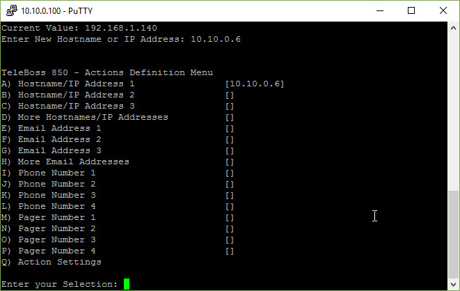

Teleboss Connection
Authors: Brett Burbidge
This example will demonstrate how to setup the connection between the Teleboss and the UTA to communicate via Simple Network Management Protocol (SNMP) using SNMP Traps.
Assumptions
This section assumes the following setup is in place.
UTA server is installed and on the network
A Teleboss is configured and on the same network as UTA
The IP of the Teleboss and UTA server are known
You understand Putty and how to login to the Teleboss using SSH.
If one of the assumptions above is incorrect please follow other steps in this manual.
Connection Tests
We will ping the UTA server from the Teleboss and vice versa to test the connection.
Note
Ping might not be enabled on the network firewalls. If you can run Putty on SSH from the UTA server to the Teleboss everything should be okay. But this is a good test if Ping is enabled.
Login to the Teleboss
Type ping [ip address of UTA]
Let the ping run then press Ctrl+c to stop the ping
- Like this:
-
Warning
if the ping is unresolved it might be that UTA and the Teleboss cannot talk to each other.
Login to the UTA server and ping the Teleboss
- Like this:

If everything is successful move to the next section.
Teleboss Setup
Login to the Teleboss
Type the word setup and press the enter key
You should see this:

Press F (Action Definitions)
Press A (Hostname/IP Address 1)
Enter the IP address of the UTA server and press the Enter key
You should see something like this:

10.10.0.6 is the IP of the UTA server
UTA Setup
We need to add a new Alarm Element for this Teleboss in UTA. Follow the instructions below to create this new element.
Open UTA in a browser and login
Add a new Alarm Element by going to Admin > Alarm Elements > New Element
Example:

Enter the Alarm Element (Teleboss) information:
Name (the name of the Teleboss)e
Ip Address (the ip address of the Teleboss)
Port (leave this blank)
Community Name (leave this blank)
Type (select Teleboss)
Collector Port (leave this blank)
Collection File Path (leave this blank)
SNMP Version (select ‘one’)
Click Save
Your new Alarm Element should look something like this:
..image:: images/uta_alarm_element.jpg
Test the Setup
Go back to the Teleboss and press the Enter button until you are out of the menu. (This may take multiple times)
Type dotrap then press the Enter key.
You should see a COMPLETE message in the Teleboss window. See below:
Behind the scenes the Teleboss is sending a type 1 SNMP Trap to the IP address we setup earlier in Action Definitions/Hostname/IP Address 1.
We need to see if this Trap made it to UTA.
Open UTA in a browser and login
Navigate to Alarms/Traps
You should see something similar to this:
Note
If you don’t see anything in the log please continue this troubleshooting guide below.
Troubleshooting
You should only be here if the tests above did not work.
Incorrect Alarm Element Configuration
In UTA go to Admin/System Log
In Putty type dotrap again.
Press the Search button in the Admin/System Log to see if there are any new results.
If you see something like this:

It means that your Alarm Element is not setup properly. The IP address you have for your Alarm Element is probably incorrect.
Note
To fix this, edit your Alarm Element with the proper IP Address and do this test again.
Incorrect UTA IP Address
It is possible that the IP Address you put into the Teleboss is incorrect.
On the UTA server open a cmd window and type ipconfig. Remember or write down the IP address of the server.
Go back to Putty and ensure the correct Teleboss is open.
Type the word setup and press the enter key.
You should see this:
Press F (Action Definitions)
Press A (Hostname/IP Address 1)
Enter the IP address of the UTA server and press the Enter key
Note
Try the dotrap test again and see if you get different results.
Firewall Settings
If none of the steps above fixed the connection issues there could be firewalls preventing the communication.
Check the firewalls on the UTA server and also on the network between the UTA and Teleboss.
Hint
In order for SNMP to work port 162 UDP/TCP must be open.